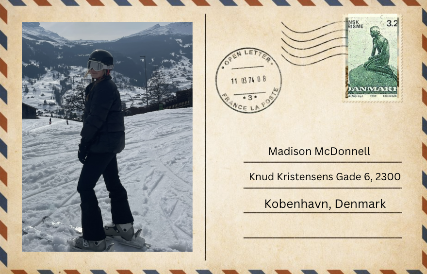
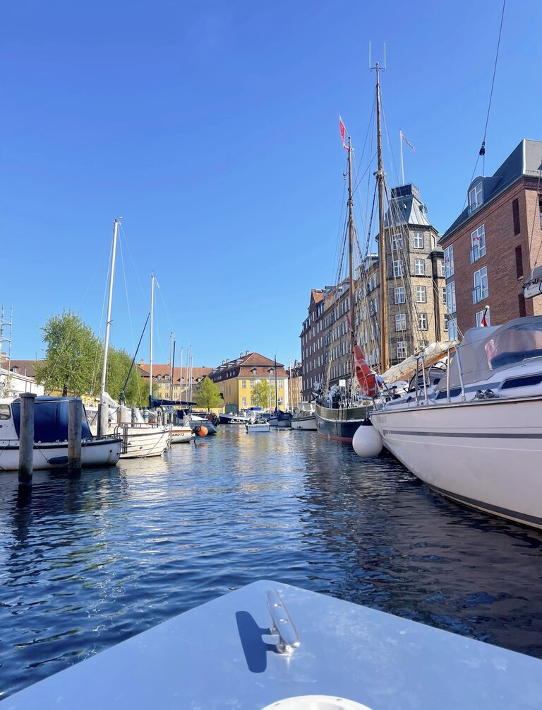

Hi! My name is Madison Wynter McDonnell, and I am currently a senior at Syracuse University. I am a Public Health major with a concentration in Healthcare Management and minoring in Information Management. Growing up, with my mother in the travel industry, I have always had an intense passion for travel. My parents truly instilled in me that traveling is the best education. While my time abroad in Copenhagen during my second semester of Junior year, I visit many places such as Finland, Prague, Italy, Spain, Germany, and more. In only four months, I truly learned more about myself than I ever thought was possible. Impressing myself in different cultures daily, made me a more diverse world-traveler. I cannot wait for my next abroad travels and see more parts of the world!
About Me:

Why Copenhagen?

As I stepped onto my flight to Copenhagen, I had the sick sense in my stomach of “what am I doing?” Processing that all my college friends were going abroad in Italy and Spain, I felt that I would have some sense of fomo (fear of missing out). Little did I know, 4 months later, I would be crying on the plane ride back home because I didn’t want to leave this amazing place. Copenhagen is not only where dreams come true, but it changed my life. Best decision I ever made was not going with my college friends and truly finding myself. As you dive into this website, I want you to feel the culture, beauty, and excitement of all Copenhagen has to offer.